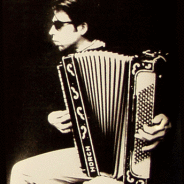

Leer stap voor stap accordeon spelen!
Neem lessen van een ervaren muzikant.
Lespraktijk voor Den Haag, voor jong en oud.
Learn to play accordion by taking lessons
from a professional musician!
Lessons for adults and children in The Hague
Wie twintig jaar geleden zei dat hij accordeon speelde werd een beetje meewarig aangekeken. Voor velen was het een ouderwets instrument waarop vaak werd neergekeken en waarmee je niet veel meer kon doen dan 'vervelende volksdeunen' spelen.
Wie twintig jaar geleden zei dat hij accordeon speelde werd een beetje meewarig aangekeken. Voor velen was het een ouderwets instrument waarop werd neergekeken en waarmee je niet veel meer kon doen dan 'vervelende volksdeunen' spelen.
Toen ik in die tijd het instrument ter hand nam ben ik er al na twee weken mee naar Parijs gegaan en ontdekte dat ik daar in de metro stations mijn brood kon verdienen. Ik had gelukkig van huis uit een brede muzikale achtergrond met veel klassieke muziek, moderne componisten, popmuziek en oude volksmuziek, onder andere uit Vlaanderen en Ierland. Als kind had ik al piano leren spelen waarbij mijn lerares veel aandacht besteedde aan een muzikale uitvoering want het gaat niet om de noten maar om de muziek (al lette ze wel heel goed op die noten). Maar de piano boeide mij uiteindelijk niet genoeg terwijl ik in accordeon juist vond wat ik zocht: een scala van tonen met dramatische mogelijkheden, een compleet instrument waarmee je ook solo kunt spelen en dat ook nog gemakkelijk mee te nemen is en dat speelt zonder stroom. Niet voor niets vind je overal ter wereld accordeonmuziek en niet alleen in Europa maar ook in Afrika, Azië en natuurlijk Noord- en Zuid-Amerika.
Toen ik in die tijd het instrument ter hand nam ben ik er al na twee weken mee naar Parijs gegaan en ontdekte dat ik in de metrostations mijn brood kon verdienen. Ik had van huis uit een brede muzikale achtergrond met veel klassieke muziek, moderne componisten, popmuziek en oude volksmuziek, onder andere uit Vlaanderen en Ierland. Als kind leerde ik piano spelen, waarbij mijn lerares veel aandacht besteedde aan de muzikale uitvoering: het gaat niet om de noten maar om de muziek (al lette ze wel heel goed op die noten). In de honger naar muziek vond ik de accordeon: een scala van tonen met dramatische mogelijkheden. Een compleet instrument waarmee je solo kunt spelen, dat je gemakkelijk mee kunt nemen en waar je geen stroom voor nodig hebt. Niet voor niets vind je overal ter wereld accordeons, niet alleen in Europa maar ook in Afrika, Azië, Noord- en Zuid-Amerika.
Terug in Den Haag wist ik dat ik muzikant wilde worden. Al snel kwam er een band (Vive le Rock!) en speelde ik bijna voortdurend accordeon op podia en de meest vreemde plaatsen, studeerde van 's morgens vroeg tot 's avonds laat en schreef mijn eigen nummers. Met de band combineerden we heel veel stijlen in een bonte en spetterende mix met op de voorgrond mijn accordeon. Er zaten Franse elementen in en Ierse en Klezmer en Amerikaanse Cajun en Rhythm & Blues. Daarnaast kwam er nog een trio met musici van het conservatorium waardoor ook Jazz in mijn muziek begon te klinken. Ik heb een jaar voor Youp van het Hek gespeeld en speel alweer geruime tijd met top performer Joris Schicks.
Ik kwam terug in Den Haag als muzikant. Al snel had ik een band (Vive le Rock!) en speelde ik bijna voortdurend accordeon op podia en feesten, studeerde van 's morgens vroeg tot 's avonds laat en schreef mijn eigen nummers. Met de band combineerden we heel veel stijlen in een bonte en spetterende mix met op de voorgrond mijn accordeon. Er zaten Franse en Ierse elementen in, Klezmer, Amerikaanse Cajun en Rhythm & Blues. Daarnaast kwam er een trio met musici van het conservatorium waardoor ook Jazz in mijn muziek begon te klinken. Ik heb een jaar voor Youp van het Hek gespeeld en speel alweer geruime tijd met top performer Joris Schicks.
Hoewel ik nog steeds graag optreed geef ik inmiddels ook alweer een aantal jaren met veel plezier les en net als mijn pianolerares help ik de leerlingen om van de noten muziek te maken want alleen zo leer je om van muziek te houden. Het is een kwestie van oefenen en geduld maar uiteindelijk kan iedereen het leren en ervaren dat een accordeon een geweldig instrument is om te bespelen en dat die zogenaamde 'vervelende volksdeunen' soms ook verassend mooi kunnen zijn, al kunnen we natuurlijk ook met andere muziek aan de slag, graag zelfs! Ik zit nog steeds goed in mijn contacten in de muziekwereld dus mocht je er verder mee willen dan help ik je daarbij graag. Ook als je nog geen noten leest kan ik je dat leren. Er gaat er een wereld voor je open en dat meen ik!
Hoewel ik nog steeds graag optreed, geef ik sinds een aantal jaar met plezier les. Ik help de leerlingen om van noten muziek te maken, want op die manier leer je om van muziek te houden. Het blijft een kwestie van geduld en oefenen maar uiteindelijk kan iedereen het leren. Je ervaart dat de accordeon een geweldig instrument is en dat die zogenaamde 'vervelende volksdeunen' soms ook verassend mooi kunnen zijn, al spelen we natuurlijk ook diverse andere muziek. Laat de wereld van de accordeonmuziek voor je opengaan!
Iedereen is bij mij welkom om les te nemen, dat kan ...XXX..... en eventueel ook aan huis. Kinderen kunnen terecht vanaf 6 jaar. Tenslotte: voor wie nog geen eigen instrument heeft heb ik een aantal exemplaren voor een lage prijs in de verhuur.
Tot horens! Bosz de Kler
Een prachtig instrument
A wonderful instrument
Hallo daar
Hi there
Wij willen ijsjes!
We want icecream!
Weh kenne heusch wel un maui preisie voor u regeluh, mevrah!
Expensive!
Bosz de Kler 06 15465232
Bosz the Kler +31 6 15465232